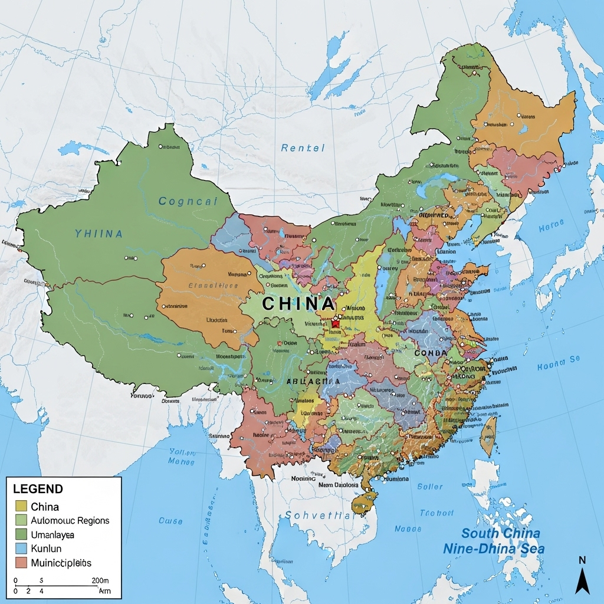
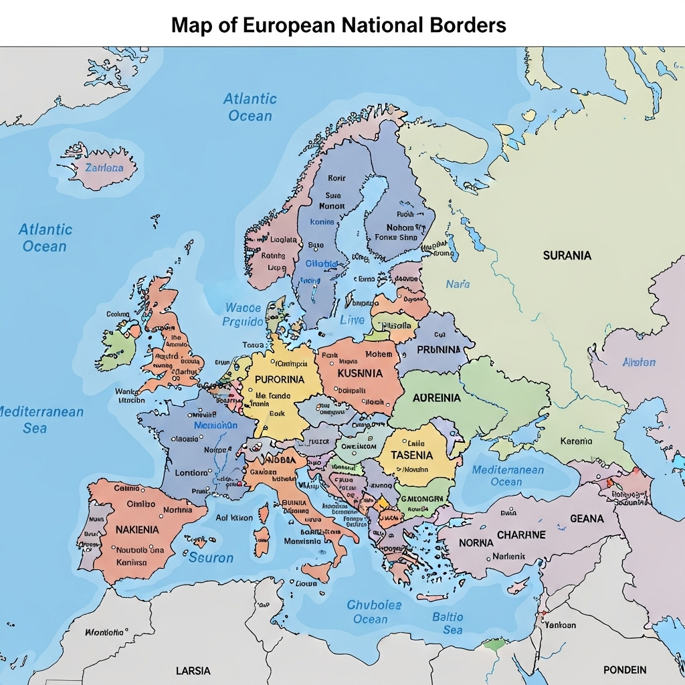
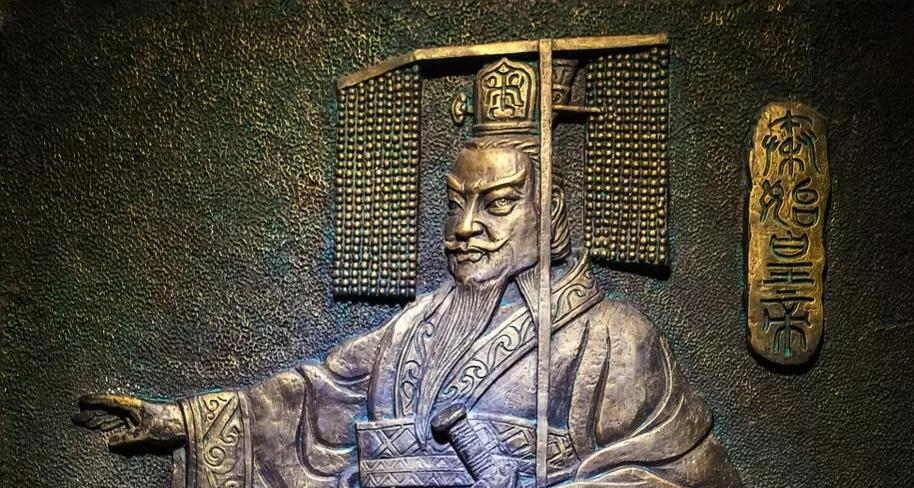

卷出来的国家
中国两千年帝国模板，竟是这样被“打”出来的？
"中国，为什么是“中国”？
中国地图
欧洲地图
你可能会说，因为秦始皇牛啊！
？ ? ?
第一章：从“贵族游戏”到“全民战争”
春秋早期的战争：“贵族之间有仪式感的斗殴”
- 讲究“武德”，约好时间地点
- 不攻击受伤的敌人
- 不俘虏头发花白的老人家
- 帮对方修好战车再打

目的：争当“霸主”，一场**“秩序之内的霸权争夺战”**
战国时期的战争：“你死我活的总体战”
- 几十上百万的步兵军团
- 不讲道义，火攻、水淹、屠城
- 目的：**彻底消灭你这个国家**
长平之战，坑杀四十万
这是一场“大逃杀”
第二章：战争压力锅催生的“怪物”
版本答案：法家
核心思想：**国家的一切，都为战争服务！**
典范：商鞅变法
- 废井田，开阡陌：国家直接控制到户，汲取能力革命性突破。
- 奖励耕战：全国只认两件事：种地和打仗。军功换爵位。
- 严酷法律和连坐：整个社会变成一个巨大军营。
法家改造后的国家
一个效率极高、动员能力极强的**战争机器**。
谁改革得最彻底，谁就最强。
第三章：机器的“软件”——儒家如何驯服“怪物”
历史的聚光灯：儒家
核心问题：**人心的认同**
儒家的“意识形态软件”
- 合法性：为等级秩序提供道德背书。
- 守护者：培养忠诚的士大夫阶层。
- 稳定剂：提供社会伦理，降低统治成本。
天才的融合：“阳儒阴法”
骨架 (硬件): 法家中央集权
操作系统 (软件): 儒家教化共识
第四章：“儒法国家”及其深远影响
超级缝合怪
法家硬件: 保证了**力量**
儒家软件: 保证了**韧性**
建立了文化和心理上的大一统，即使王朝崩溃，也能快速重建。
回到最初的问题
为什么中国能保持两千年的大一统？
东周500年血腥“大逃杀”
👇
锻造出**法家**利剑
👇
配上了**儒家**剑鞘
👇
“儒法国家”终极模型
超级模板的昂贵代价
权力的绝对碾压
政治权力 + 意识形态权力
👇
碾压其他所有权力
中国：权力融合
欧洲：权力分立
被压制的权力
- 军事权力被“阉割”：“以文制武”
- 经济权力被“圈养”：“重农抑商”
- 思想被“收编”：科举制
结果：消灭了变革的阶级、思想和动力。
不堪一击
系统趋于保守和内卷，在面对全新文明时，引以为傲的稳定系统显得不堪一击。
探讨与交流
如果你对这段历史有什么自己的看法，或者想了解更多相关的故事，非常欢迎在评论区留言，我们一起探讨。
核心参考文献:
[此处可列出参考文献]
感谢支持！
请一定记得**点赞、订阅、并且打开小铃铛**
我们下期再见！